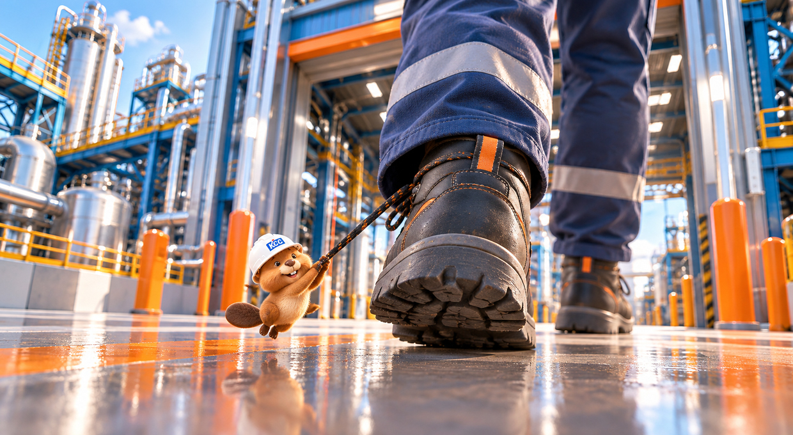
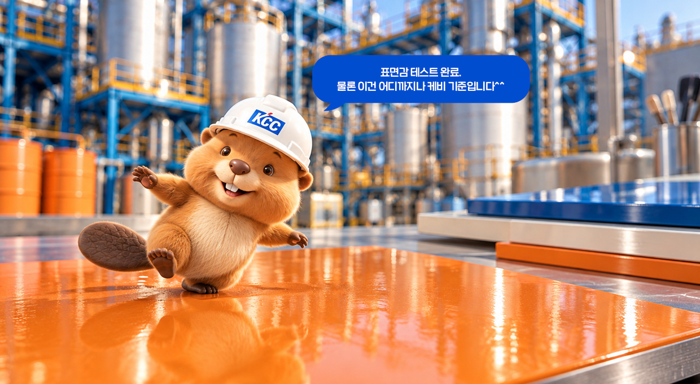
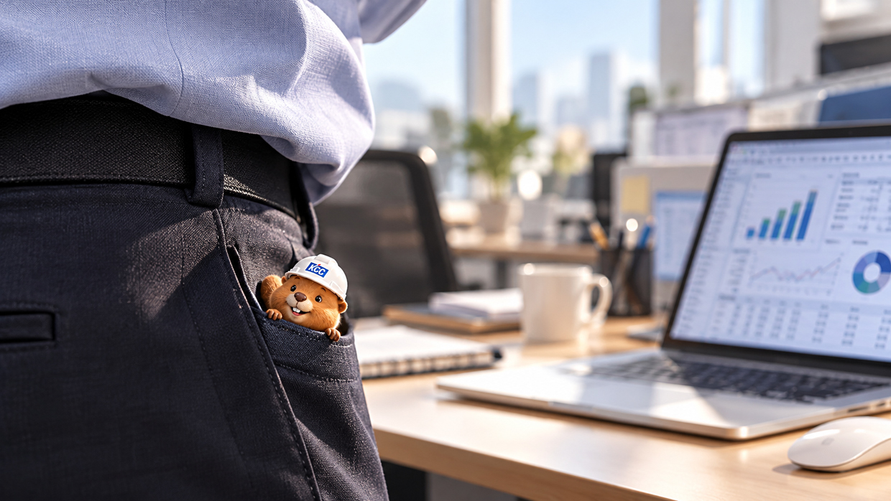
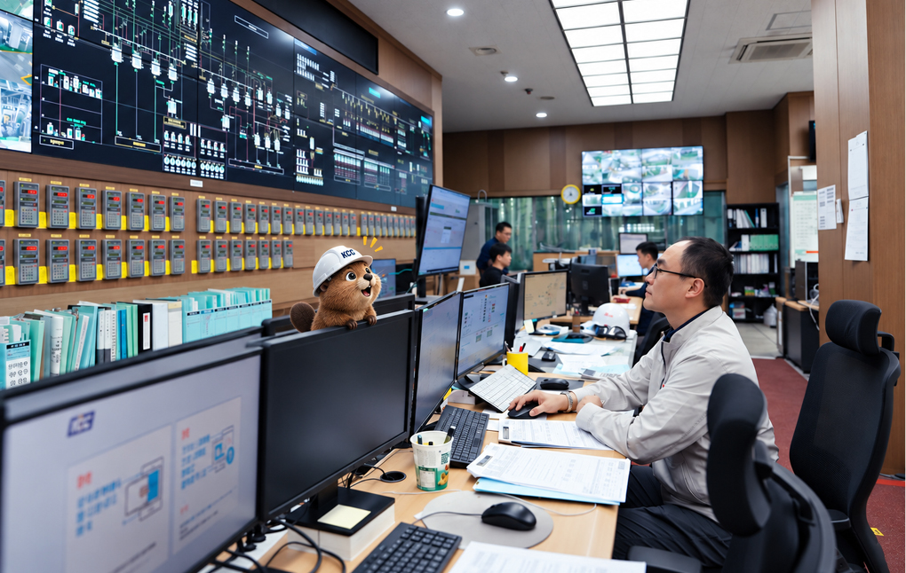
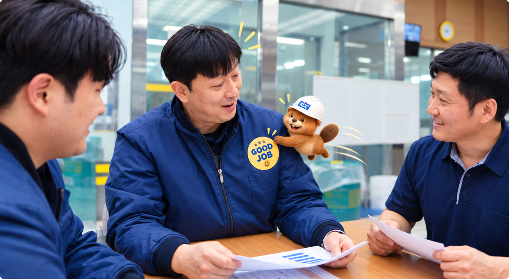

오늘 케비가 도착한 곳은 울산 동구, KCC 울산공장. 자동차에서 선박, 산업용 강판까지 우리가 일상에서 만나는 수많은 표면의 색과 기능을 책임지는 도료 생산 거점이다. 울산공장은 자동차도료를 비롯해 중방식·공업용·PCM 등 다양한 도료를 생산해온 곳으로, 최근에는 Big Data와 AI를 생산 과정에 접목하며 ‘도료를 만드는 방식’ 자체도 바꿔가고 있다. 그런데 오늘 취재기자는 평범한 기자가 아니다. 신장 약 1cm. 이름은 케비. 정문을 통과하기도 전에 한 직원의 안전화 끈에 찰싹 매달렸다.

01 KCC 울산공장에서는 무엇을 만들까?
오늘 케비가 찾아온 곳은 KCC 울산공장. 손톱보다 작아진 케비는 출근하는 직원의 안전화 끈에 몸을 묶었다. 목적지는 모른다. 다만 오늘의 이동수단은 확보했다. “교통비 0원. 승차감은... 별 세 개.” 안전화가 멈춘 곳에서는 여러 도료 생산 공정이 이어지고 있었다. 울산공장에서는 , 공업용도료, , 등의 제조 공정이 운영되고 있다.
인간에게는 생산설비 한 대. 손톱만 한 케비에게는 도시 전체가 움직이는 규모다. “잠깐, 페인트 만드는 곳이라길래 색깔 구경하러 왔는데, 왜 내가 공상과학영화 세트장에 들어온 것 같지?” 공정 사이를 정신없이 구경하던 케비가 이번에는 도장 샘플 위로 올라갔다. 매끄러운 표면을 몇 걸음 걷더니 그대로 미끄러진다.

무슨 소리일까요?
정답 : ② 이 소리는 도료 제조설비가 움직이는 기계음입니다.

02 도료 공장에서 AI는 무슨 일을 할까?
이번에는 직원의 주머니에 올라타 사무공간까지 무임승차했다. 책상 위에 내려오자 노트북 화면에는 숫자와 데이터가 빼곡하다. 울산공장은 ‘Big-Data & AI를 활용한 도료 생산 패러다임의 전환’을 주제로 생산 혁신 과제를 추진했다. 색상 정보와 생산실적 자료를 연결하고, 재고와 수익성 정보 등을 함께 활용해 유사·중복 색상의 반복 개발과 소량 다품종 생산 과정에서 발생할 수 있는 낭비, 재조비, 재고 문제 등을 개선하는 것이 주요 내용이었다. 이 과제는 KCC 핵심전략과제 경진대회에서 대상을 받은 바 있다.

회의가 20분 이상 지속되자 케비가 연신 하품을 한다. “AI가 답은 빨리 내놓는다던데, 사람들은 왜 이렇게 오래 이야기하지?” 엔터 버튼 위에서 “쿵” 발을 굴려보지만, 아직 해결점은 보이지 않는다. 그리고 케비는 한 가지를 알아냈다. AI가 가능성을 보여줄 수는 있지만, 실제 현장에 어떤 답을 적용할지는 사람의 전문적인 판단과 함께 결정된다는 것을. 울산공장이 과거 자동차도료 품질 개선 과제를 수행했을 때도 생산·기술·품질·분석 등 여러 부서가 함께 원인을 찾고 개선했다. 공장은 설비로 움직이지만, 개선은 결국 서로 다른 전문성을 가진 사람들이 연결될 때 일어난다.
03 AI가 있어도 현장 경험이 중요한 이유
케비는 오늘 하루 동안 거대한 설비보다 더 자주 사람들의 얼굴을 올려다봤다. 색을 확인하는 눈, 수치를 다시 들여다보는 사람, 설비 상태를 점검하는 손, 문제가 생기면 여러 부서가 머리를 맞대는 회의. 울산공장의 자동차도료 품질 개선 과정에서 여러 관련 부서가 함께 원인을 분석하고 개선한 사례도 소개돼 있다. 즉 도료 품질은 하나의 설비나 하나의 데이터만으로 완성되는 것이 아니라 공정·기술·품질 등 여러 전문영역의 협업을 통해 관리되는 영역이다.

오늘 케비가 울산공장에서 발견한 주인공은 도료의 품질을 확인하는 도료기술팀 김성한 프로입니다. 생산된 도료의 색상과 외관, 광택 상태를 꼼꼼히 살피고 작은 이상 징후도 놓치지 않는 것이 그의 일입니다. 하루 종일 현장을 오가며 데이터를 확인하고 동료들과 의견을 맞추는 모습까지 지켜본 케비는 오늘의 칭찬 스티커를 슬쩍 붙여두기로 했습니다. “거대한 공장을 움직이는 건 설비지만, 완성도를 지키는 건 이런 사람의 한 끗 아닐까요?”
댓글 3
min***
과학이 항상 숨어있네요
jhkim***
케비를 따라가니 어렵게 느껴졌던 도료 생산 과정이 한결 친근하게 다가오네요!
sunny***
익숙한 제품 뒤에 이렇게 많은 공정과 노력이 숨어 있었다니, 현장에서 일하시는 분들이 더 멋져 보입니다.